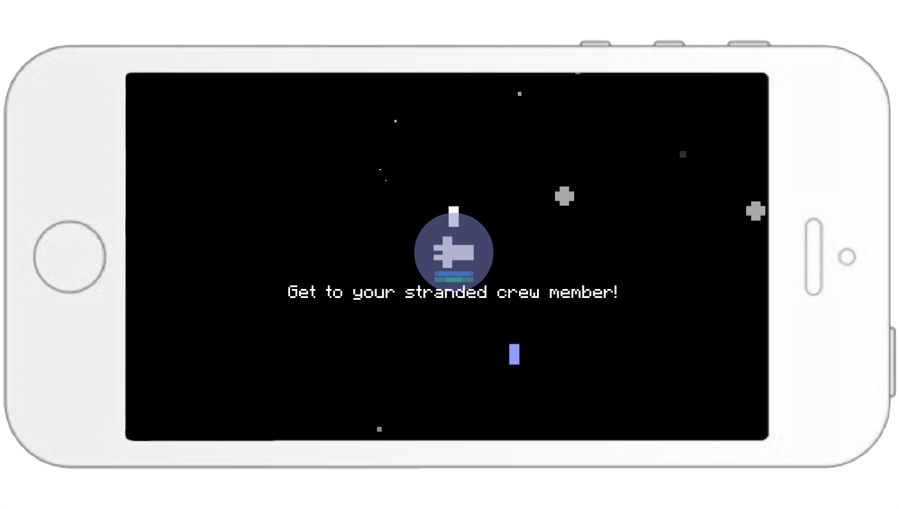

iOS game created during the 2014 MakeSchool Summer Academy
Play as a lil' astronaut and rescue as many of your stranded crew members in outer space (available on the Appstore)!
The inspiration of this game comes from my favorite, old school arcade game "Atroids", created by Atari. The most memorable functionality of this game was how it truly felt like the impulse of the ship was fighting against its own velocity to avoid collisions with astroids. This sensation of floating in space was the one component I wanted to accomplish in my rendition of a space game.
To recreate this sensation I used the accelerometer in the cocos2d game engine. It is most common to add "force", or a numerical value to the known velocity of the astronaut, but I chose to update the position per frame depending on the direction and magnitude of the tilt. This gives the player better control and smoother mobility of the astronaut.